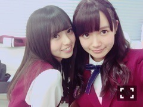
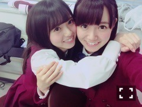
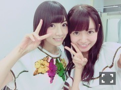
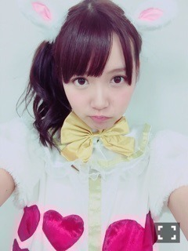

| 2015/11 02 Mon | 中元日芽香 ひめたん-0o0-その585 |
あすかさあーん

こっち向いた

あらかわいい♡
昨日の乃木坂工事中では
サンクエトワール「大人への近道」の
スタジオライブが流れました！
スタジオライブできたらいいね～って
5人で言っていたら
本当に実現してしまうとは。
観てくれたかなー？
また1つ夢が叶いました
ありがとうございました( ˇωˇ )
来週は企画プレゼン！！
私の顔がとても
テレビでお見せできるものでは
なかった気がしますが......
頑張ったので是非観てください
よろしくお願いします。

日曜の夜はらじらー！サンデー
11/1のゲストは乃木坂から
高山一実ちゃん、能條愛未ちゃんでした
ハロウィン回！
オリラジさんもスタッフさんも
ゲストの二人も、そして私も
みんなでコスプレしたよ(´｡•ω•｡`)
オリラジのお二人とも本格的で
クオリティ高くてびっくりした～！
浴衣といいハロウィンといい
ラジオなのにとか言わせないところが
素晴らしい番組だなと身内ながら。
次はクリスマスかな♡♡
アンダーライブのお話を
たっぷりさせていただけて
もう感謝です( ´•̥ω•̥` )
お二人の感想は昨日はじめて聞けたし
私も思いの丈をたくさん
みなさんにお話できてよかった( ´•̥ω•̥` )
ライブに関するメールも
たくさん届いてたみたいで
みなさん本当にありがとう！
アメイジング対決は
かずみんのリベンジ成功ということで
負けてしまいましたが
また新しい対決でスタジオ来て欲しい！
愛未は初登場でしたが
短い時間で愛未のこと伝わったかな？
また勝負したいです＼(^o^)／
ジョンソンお迎えできたよ！やったー！
昨日は二人とも前のお仕事終わりで
あまり時間がなかったのが残念......。
それでも仮装して来てくれて
楽しい時間をありがとう！です！
真夏さんもさゆちゃんも
755で絡んでくれて
わちゃわちゃしましたね♡
メンバーが聞いてくれてるの嬉しいな。
来てくれるのはもちろんだけど
聞いてくれるのも嬉しい。
なんか昨日の放送は駆け抜けたな～
ばぁぶ(´ฅ•ω•ฅ｀)へへ
あ、そう、それでね
私10/18にハロウィンしたけど
明日の握手会で天使着ることにした♡
2部、3部で着る予定です～！
わかんない気分で変わるかも( ´ ･ω･ ` )
遅れてきたハロウィン！
てことで明日は個別握手会です！
パシフィコ横浜です、
お間違いなきように......。
間違えて幕張とか行っちゃったよ～て
1部逃しちゃう人
いっぱいいるからね(・∀・)
シングル発売になってからは
初めての握手会なので
やっと話せるぅぅうううみたいな話が
たくさんあります。
初めましての方もお久しぶりですの方も
お会いできるの楽しみにしてます♡

ぴょーん。
うさぎの使い道に困っています。
名古屋テレビ「BOMBER-E I.ナイト」
トーク＆ライブ収録に
出演させていただきます
11/10、名古屋市内某所にて。
観覧募集を行っているみたいなので
良かったら遊びにきてください( ˇωˇ )
詳しくは公式サイトへ！
あ、さっきおに魂聞いてたよ～！
なっちゃん鍋楽しみにしてるよ♡
ゆったんもお疲れ様でした！
最後に皆様ソニレコよろしくね～
(＊´・ω・＊)